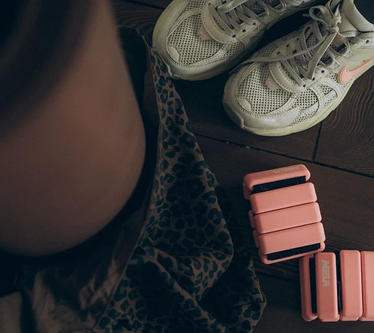
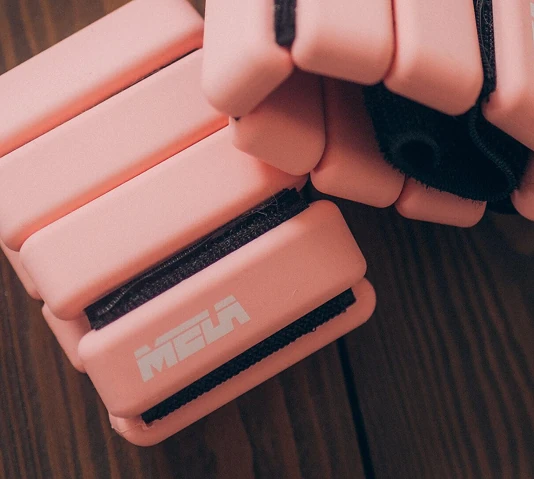
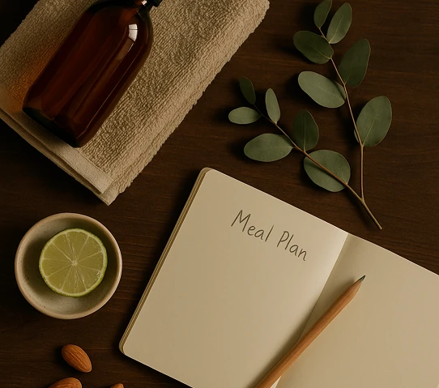
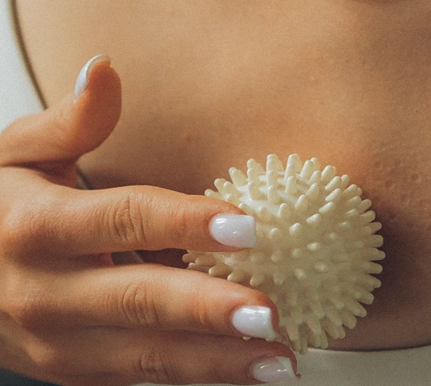

01КОРРЕКЦИЯ
КОРРЕКЦИЯ
ОСАНКИ
Избавление от сутулости и формирование красивой линии спины
Бережный фитнес · сильное тело
персональный тренер по фитнесу
с высшим спортивно-педагогическим
образованием и многолетним опытом
{ моя главная миссия — помогать женщинам чувствовать себя сильными, здоровыми и красивыми, возвращать лёгкость движения и уверенность в собственном теле }
Найти свой формат ↗{ моя главная миссия — помогать женщинам чувствовать себя сильными, здоровыми и красивыми, возвращать лёгкость движения и уверенность в собственном теле }
За 4 года работы я помогла более 250 девушкам стать стройными, подтянутыми и уверенными в себе
Со мной вы получите не просто план, а системный подход, который работает на результат и формирует новые привычки на долгие годы
Выбрать программу ↗
Избавление от сутулости и формирование красивой линии спины
Упругость, форма и избавление от дряблости
Грамотный подход без жёстких ограничений
Бережные тренировки с учётом особенностей спины и поясницы
Создание стройного силуэта
Здесь появятся результаты и истории учениц.
Фотографии и отзывы добавим с их согласия.
для тех, кто хочет максимально персонализированный подход, видеть результат и чувствовать постоянную поддержку тренера

10 000 ₽ ( в месяц )
для тех, кто хочет системно заниматься дома, получать разнообразие и чувствовать прогресс без сложного оборудования

4 999 ₽ ( навсегда )
Вы будете питаться разнообразно и с удовольствием, без лишних ограничений, но с реальными изменениями в теле и самочувствии

4 000 ₽ / мес
Формат для тех, кто хочет максимально персонализированный подход, видеть результат и чувствовать постоянную поддержку тренера

990 ₽ ( навсегда )